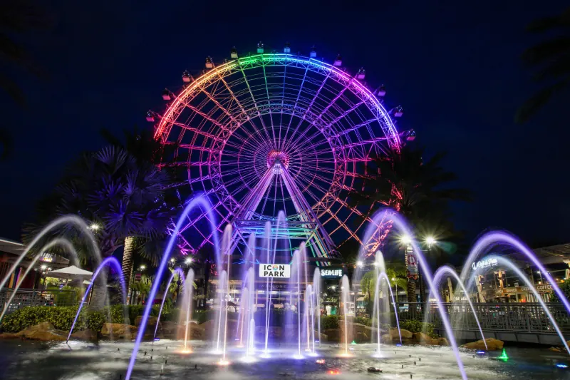

ICON Park & The Orlando Eye
The whole I-Drive night skyline has a new compass point. ICON Park's 400-foot wheel lifts you above the city for a slow, twenty-minute soar with Orlando spread out in every direction, and the ground below keeps the energy going: SEA LIFE's ocean tunnel, Madame Tussauds, live music at Tin Roof, and SlingShot launching the brave 450 feet straight up. No gates, no ticket to wander in, just a park that keeps giving you reasons to stay.